原文连接:https://www.cnblogs.com/lixinjie/p/taste-spring-017.html
非Spring风格的代码与Spring的结合
现在的开发都是基于Spring的，所有的依赖都有Spring管理，这没有问题。
但是要突然写一些非Spring风格的代码时，可能会很不习惯，如果还要和Spring风格的代码结合起来的话，就会稍显麻烦。
因为非Spring风格的代码不由Spring管理，所以Spring不会给我们注入依赖，相反，我们要自己去Spring中拿取依赖。
所以首先目标就是要获取Spring容器，即ApplicationContext，方法通常如下图01：
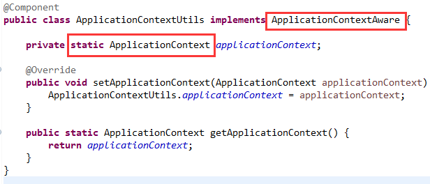
定义一个类实现ApplicationContextAware，类中定义一个静态的ApplicationContext字段，Spring会把容器注入到这个静态字段。
由于类的静态字段在JVM中一直存在，这样ApplicationContextUtils这个类就可以在非Spring风格的代码里使用Spring管理的bean了。
若用于定时任务是否有潜在的问题
Spring自带的定时任务，非常好用，而且我很早就用过，具体时间已经记不清了。
我依稀记得以前好像觉得容器还没有启动完成时，定时任务就有可能被触发。就姑且认为是这样吧，当然也可能不是。
如果我的定时任务运行的代码是非Spring风格的，我自然需要自己去new实例，如下图02：
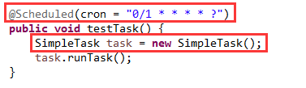
如果这个非Spring风格的代码恰好又要使用Spring管理的bean，那就是刚刚上面提到的方式，如下图03：
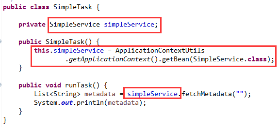
可以看到SimpleService是Spring管理的bean，SimpleTask却不是，所以只能在构造方法里使用容器的getBean方式获取。
这种方式通常是没有问题的，我们也都是这样用的。但是要把它放到定时任务里呢？
会不会出现定时任务触发的较早，此时ApplicationContextUtils类里的静态字段ApplicationContext还没有被注入呢？
如果真这样的话，那可就空指针了。那到底会不会这样呢，一起来探索发现下吧。
探索与发现，没有频道
我比较认同这个观点：
当一个人什么都不知道的时候，他觉得自己什么都懂，老想出来指点江山。
当一个人随着学习知道的越多，他发现自己懂的越少，反而不敢随便乱说。
其实就是，知道的越多，问题就越多，随之而来的困惑也就越多。
我写完16篇《品Spring》文章，知道了bean定义注册的顺序、bean实例化的顺序、bean后处理器应用的顺序都和本文描述的问题有关。
所以我也不敢冒然乱说，只能逐步测试逼近答案，这就是典型的知道的“太多了”的烦恼，哈哈。
其实本文的问题就是一个先后顺序的问题，如果定时任务先触发就会产生空指针，如果静态字段先注入，就不会有空指针。
而我选择了相信有空指针，完全是吃瓜群众幸灾乐祸的心理，嘻嘻。
所以我就想办法安排空指针的出现。甚至“处心积虑”，直至使出浑身解数。
一、让定时任务的bean定义注册早于ApplicationContextUtils
抛开依赖不说，实例化的顺序就是bean定义注册的顺序。
bean定义注册的顺序怎么确定呢？单就扫描jar包而言，就是包名和类名的字母顺序。
因此，我的安排如下图04：
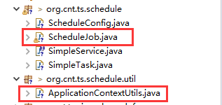
最终bean定义的顺序符合预期，如下图05：
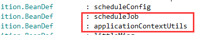
这说明bean实例化的顺序是，先实例化定时任务，再实例化ApplicationContextUtils。保证了定时任务在前。
遗憾的是，我安排的空指针没有出现，一切是正常的，定时任务中可以获取到静态字段的值。
二、让定时任务以最快的速度触发
因为这两个bean定义是挨着的，所以实例化也是挨着的。会不会是实例化执行的太快了？
由于实例化的速度无法控制，所以就加快定时任务的触发速度，试试看。
改成1秒就触发，如下图06：
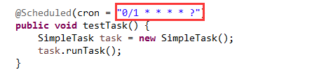
哎，遗憾的是还是一切正常，我太想看到报错了，哈哈，继续使“阴招”。
三、让ApplicationContextUtils的实例化过程卡住
定时任务肯定先实例化好，然后才会去实例化ApplicationContextUtils。
这次想办法让后者卡住，这样定时任务该先执行了吧。小样，我还治不了你啦。
因为定时任务是在单独的线程池中执行，所以让主线程睡一会即可，如下图07：
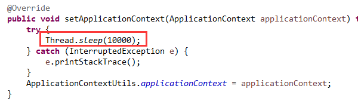
主线程确实卡住了，遗憾的是还是一切正常。
深入虎穴，不为虎子
ApplicationContext的注入和定时任务的处理都是由bean后处理器完成的。
所以把容器中的后处理器都输出来看看，如下图08：
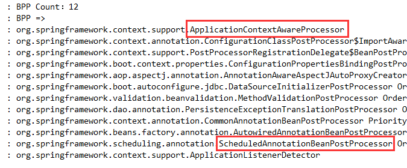
可以看到共有12个，显示的顺序就是它们被应用的顺序。
也就是说对于每一个bean实例的创建，都会应用这12个，且按如图顺序应用。
只不过每个bean后处理器只处理自己关注的bean，对于不关注的不起作用而已。
而且这12个的顺序只对单个bean有意义，对于不同的bean，没有意义。
因为在测试时，我发现每次必须等容器启动好后，定时任务才开始执行。
所以只能去看处理定时任务的bean后处理器源码了，即ScheduledAnnotationBeanPostProcessor这个类。
于是就从上往下看源码，当看到这个方法后，我似乎明白了，如下图09：
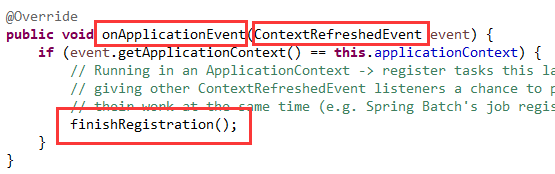
这是一个事件的回调方法，参数是ContextRefreshed事件对象，说明在容器启动完成后会调用这个方法。
再看看方法体，就一句代码，finishRegistration，完成注册，说明在容器没有启动好之前，这个注册是不会完成的。
其实已经表达的很清楚了，只有在容器启动完成后，定时任务才会完成注册，才会开始被调度。
然后再看看完成注册方法，它的最后一句代码如下图10：
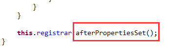
这个方法名很亲切吧，就是和初始化相关的。
然后再进到这个方法里看看，如下图11：
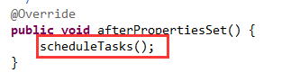
也只有一句代码，就是调度任务。哦，现在才开始调度。之前的只是注册任务，并没有调度。
惨遭打脸？其实并没有
我仔细看了几遍源码，发现写的很有特点，既支持容器启动好后触发定时任务，也支持容器启动过程中的及时触发。
只不过现在默认是前者而已。所以我怀疑以前可能就是及时触发，后来可能觉得不太合适，就进行了改造，成了现在这样子。
这既是探索与发现精神，也是好奇精神，就是它促使了我们向前发展，去了解更多的未知领域。
>>> 品Spring系列文章 <<<
品Spring：SpringBoot和Spring到底有没有本质的不同？
品Spring：SpringBoot轻松取胜bean定义注册的“第一阶段”
品Spring：SpringBoot发起bean定义注册的“二次攻坚战”
品Spring：注解之王@Configuration和它的一众“小弟们”
品Spring：对@PostConstruct和@PreDestroy注解的处理方法
品Spring：对@Autowired和@Value注解的处理方法
品Spring：真没想到，三十步才能完成一个bean实例的创建
>>> 热门文章集锦 <<<
爸爸又给Spring MVC生了个弟弟叫Spring WebFlux
【面试】吃透了这些Redis知识点，面试官一定觉得你很NB（干货 | 建议珍藏）
【面试】如果你这样回答“什么是线程安全”，面试官都会对你刮目相看（建议珍藏）
【面试】迄今为止把同步/异步/阻塞/非阻塞/BIO/NIO/AIO讲的这么清楚的好文章（快快珍藏）
【面试】一篇文章帮你彻底搞清楚“I/O多路复用”和“异步I/O”的前世今生（深度好文，建议珍藏）
作者是工作超过10年的码农，现在任架构师。喜欢研究技术，崇尚简单快乐。追求以通俗易懂的语言解说技术，希望所有的读者都能看懂并记住。下面是公众号和知识星球的二维码，欢迎关注！